使用 Sentry 对前端项目进行异常监控
前面在 前端异常监控 一文里大概了解了前端是如何进行异常监控的，但是要搭建一个完整的异常监控系统还是很麻烦的，不仅仅需要完善一下我们前端的异常监控代码，还需要单独开发一个异常管理系统。好在我们有现成的轮子可以使用，Sentry 是就是一个非常出色的服务，今天我们就来了解一下如何使用 Sentry 进行异常监控的。
创建前端项目
我们以 Vue 的项目为例，首先使用 vue-cli 创建一个项目
vue create hello-world |
然后在在项目里手动抛出一个异常，以便后续异常上报。
在 /src/components/HelloWorld.vue 文件第 40 行抛出一个错误：
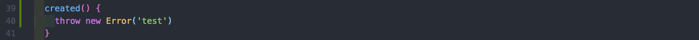
注册
我们可以使用 Sentry 提供的在线服务来帮助我们进行异常监控。首先我们需要注册一个帐号，注册地址
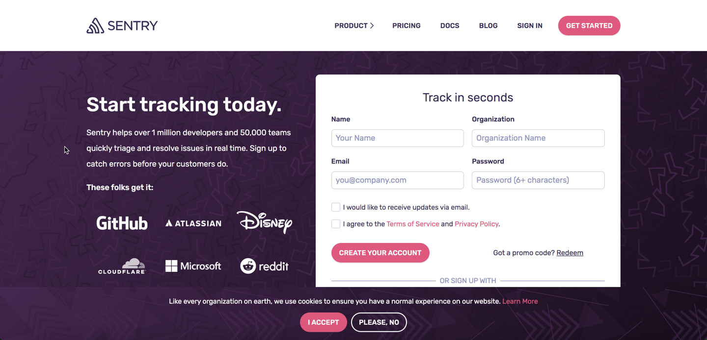
如上图所示，填写姓名、组织、邮箱、密码后就可以了。
创建 Sentry 项目
创建一个 Sentry 非常简单，只需要选中我们想要类型的项目就可以了：
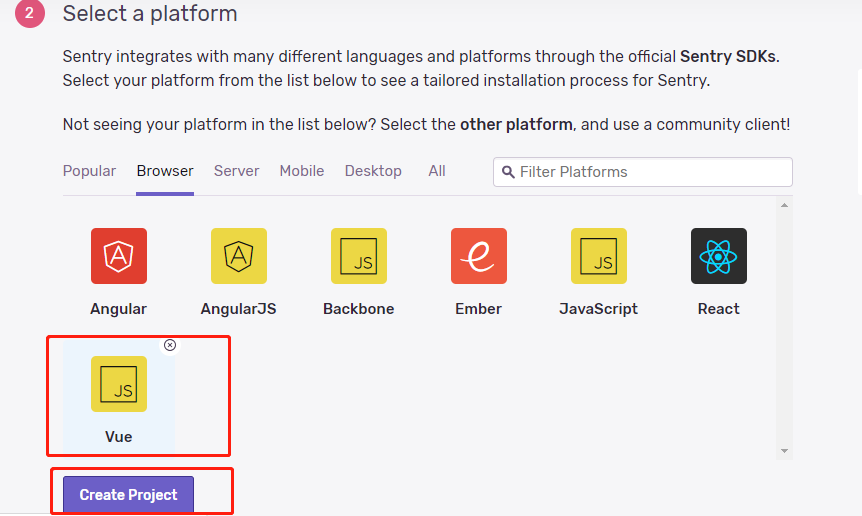
前端项目相关配置
按照创建完项目后 Sentry 的提示，在我们的 Vue 项目中进行配置即可：
- 安装
@sentry/browser
# Using npm |
- 安装
@sentry/integrations
# Using npm |
- 在
/src/main.js中添加代码
import * as Sentry from '@sentry/browser'; |
OK，配置完成。
开发环境
启动我们的项目，然后打开我们的前端页面。
npm run serve |
打开控制台，发现浏览器并没有打印我们的错误，可见 Sentry 已经捕获到错误了。 若需要浏览器在控制台打印错误，可通过设置 integrations 的 logErrors 选项为 true。
然后看一下我们的 Sentry 项目管理页面，可以看到已经收集到异常了：
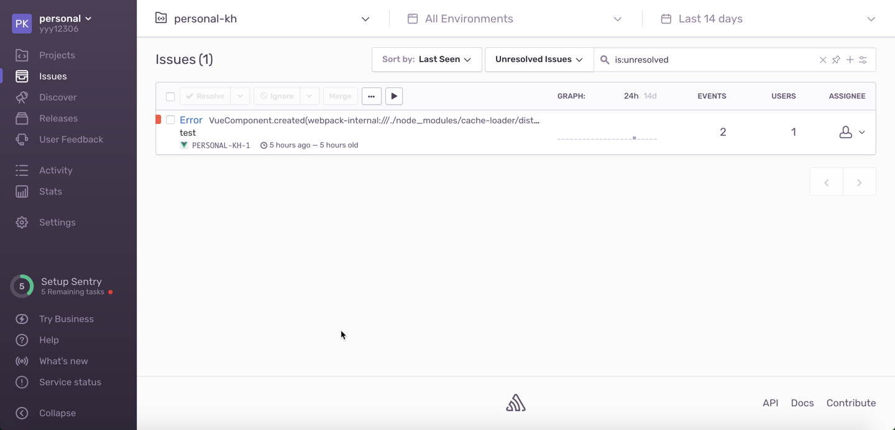
点开错误详情看一下：
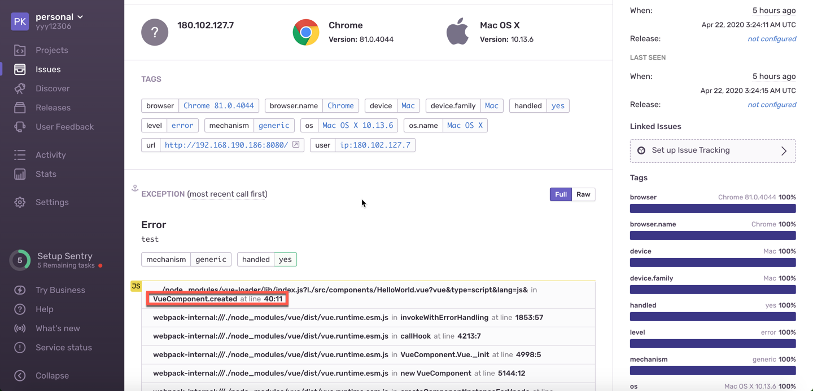
可以看到，错误信息收集的十分完整，不仅有错误的堆栈信息，还有浏览器环境相关信息等等。
现在已经可以愉快的收集异常了，是不是非常简单 ~~
生产环境
生产环境中我们的代码肯定都是经过压缩的，那我们看一下在生产环境中，Sentry 的表现是怎样的。可以本地通过 docker 启动一个 nginx 服务来部署我们的代码，这里就不详细介绍了。项目部署之后，再去看一下我们收集到的异常详细信息：
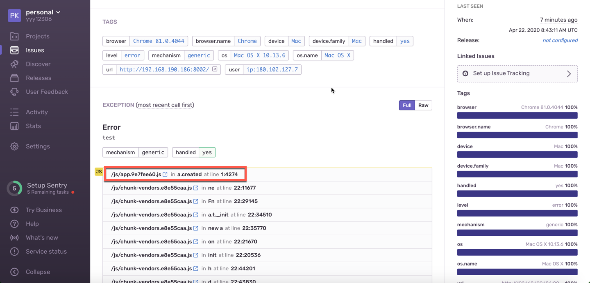
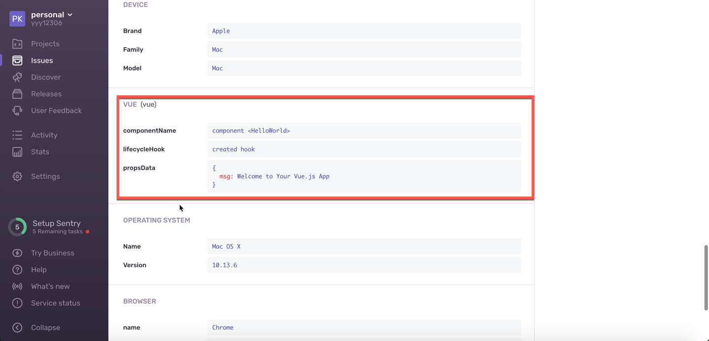
只能看到错误发生在哪个组件的生命周期钩子里，错误的堆栈信息是代码压缩后的代码堆栈信息，这对我们对错误进行定位就不是很方便了，为了解决这个问题，我们需要把webpack打包生成的 js 文件以及 sourceMap 文件上传到 Sentry 上面，这样，Sentry 就能够帮助我们准确定位了。
我们需要做以下操作：
1. 安装 @sentry/webpack-plugin
# Using npm |
2. 修改 webpack 配置 和 release 相关版本配置
- 新增
/src/settings.js文件，方便进行 release 版本管理。
module.exports = { |
- 在
/src/main.js中初始化 Sentry 时添加 release 相关配置。
import settings from './settings.js' |
- 新增
.sentryclirc文件
[defaults] |
对文件中的参数进行一下说明：
使用 Sentry 在线服务的话，url 设置为 https://sentry.io/
org 和 project 可按下图进行配置：
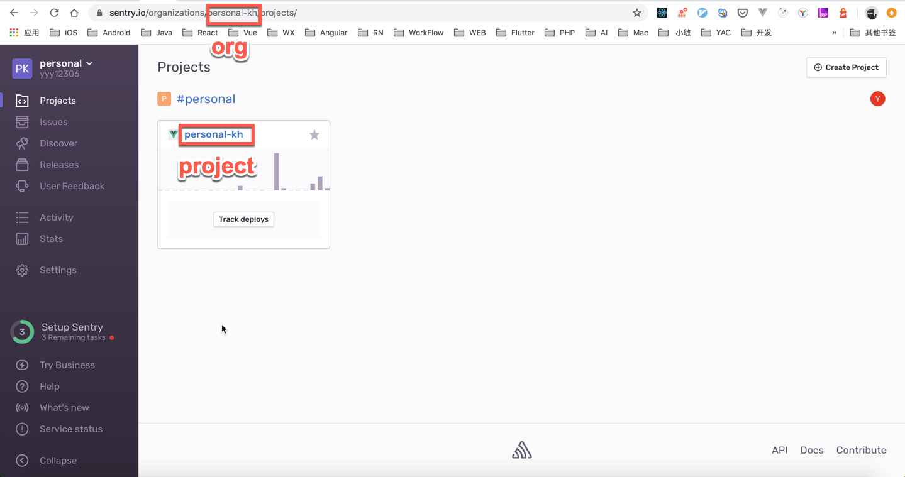
token 按以下步骤获取：
点击红框标出的 setting
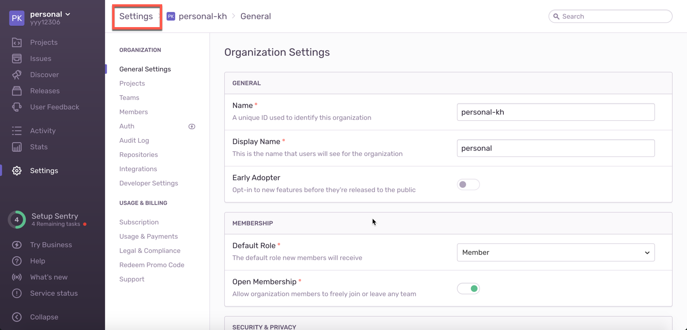点击红框标出的 Auth Tokens
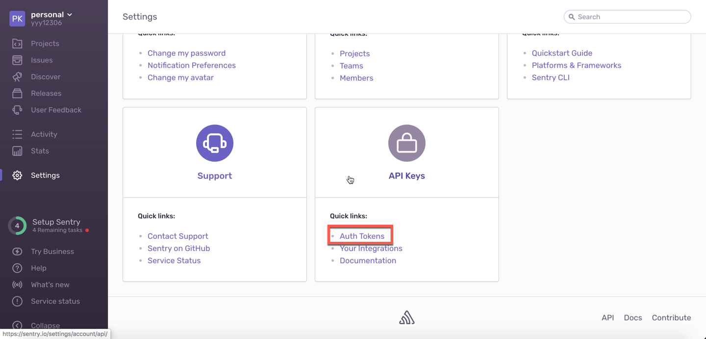点击红框标出的 Create New Token
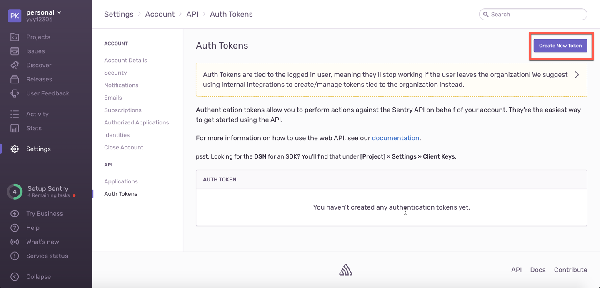选中 project:write
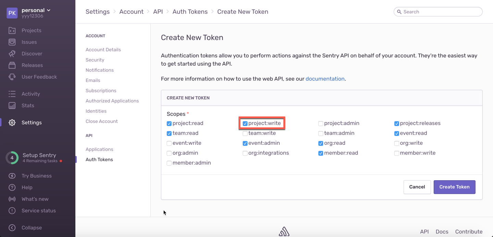复制 token 到
.sentryclirc文件中
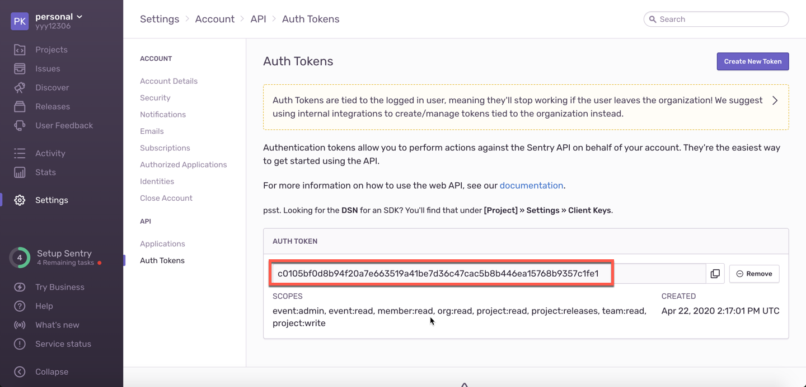
- 新增
vue.config.js文件
; |
3. 重新打包部署
执行打包命令:
npm run build |
可以在命令行中看到我们上传了打包后生成的 js 文件 和 map 文件：
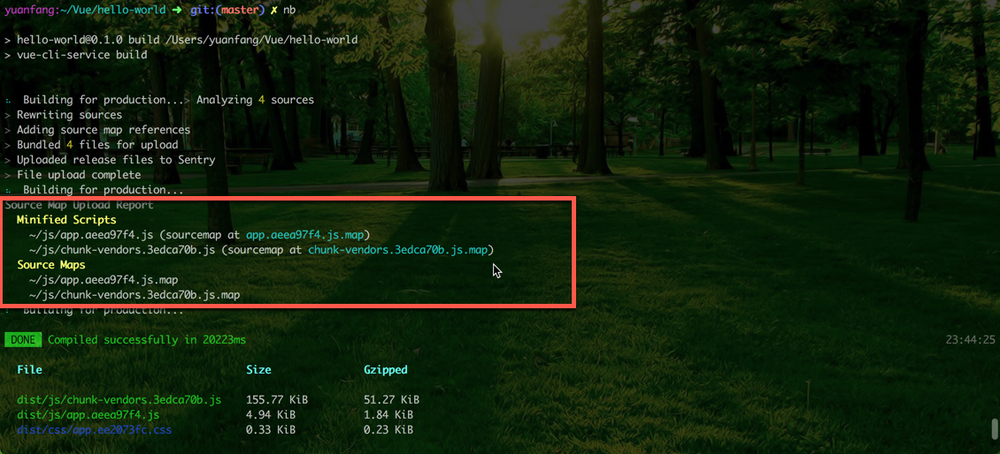
上传后的文件可以在 Sentry 的管理页面中 Releases 相关版本详情中看到：
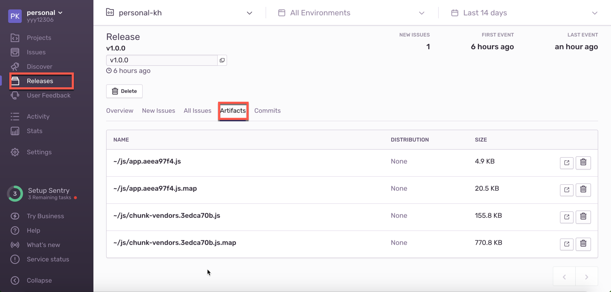
部署后，刷新页面，然后进入到 error 详情中查看，如下：
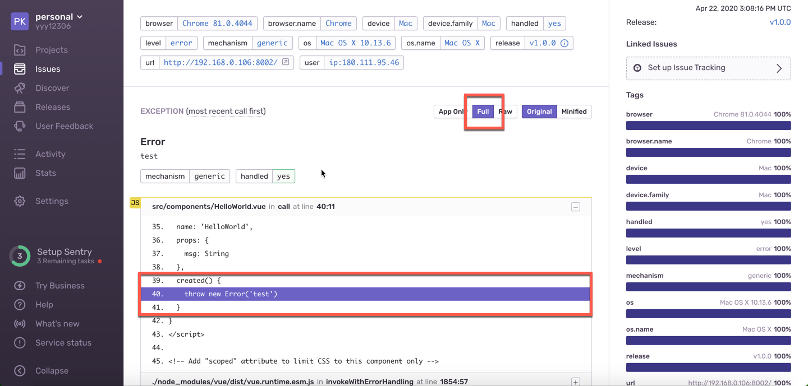
发现可以精准的对错误信息进行定位，完美 ~~
私有化部署
如果企业内部使用的话，私有化部署还是很有必要的。接下来我们就使用 Docker 部署一个 Sentry 服务
1. 启动Redis容器
docker run -d --name sentry-redis redis |
2. 启动 Postgres 容器
docker run -d --name sentry-postgres -e POSTGRES_PASSWORD=secret -e POSTGRES_USER=sentry postgres |
3. 生成所有 Sentry 容器共享的密钥
export SECRET_KEY=$(docker run --rm sentry config generate-secret-key|tail -n 1) |
4. 如果这是一个新数据库，则需要运行 upgrade
docker run -it --rm -e SENTRY_SECRET_KEY=${SECRET_KEY} --link sentry-postgres:postgres --link sentry-redis:redis sentry upgrade |
输入邮箱、密码 创建用户。
5. 启动 Sentry 容器
docker run -d -p 9000:9000 --name my-sentry -e SENTRY_SECRET_KEY=${SECRET_KEY} --link sentry-redis:redis --link sentry-postgres:postgres sentry |
6. 启动调度器和 worker
docker run -d --name sentry-cron -e SENTRY_SECRET_KEY=${SECRET_KEY} --link sentry-postgres:postgres --link sentry-redis:redis sentry run cron |
使用本地 Sentry 服务
依次执行命令后，没有问题的话就可以访问 http://localhost:9000 来看一下我们部署的 Sentry 服务了。页面与 Sentry 的在线服务有些区别，但操作流程基本一样。
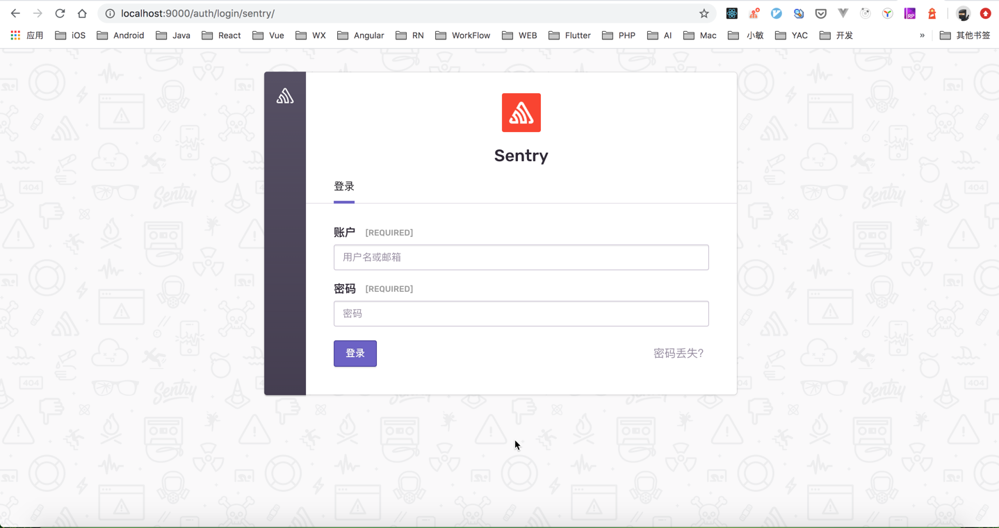
登陆成功后，新建一个项目，然后修改一下配置：
1. 在 /src/main.js 中修改 dsn
import * as Sentry from '@sentry/browser'; |
2. 重新生成 token 并修改 .sentryclirc 文件
[defaults] |
然后重新部署 Vue 项目，测试一下：
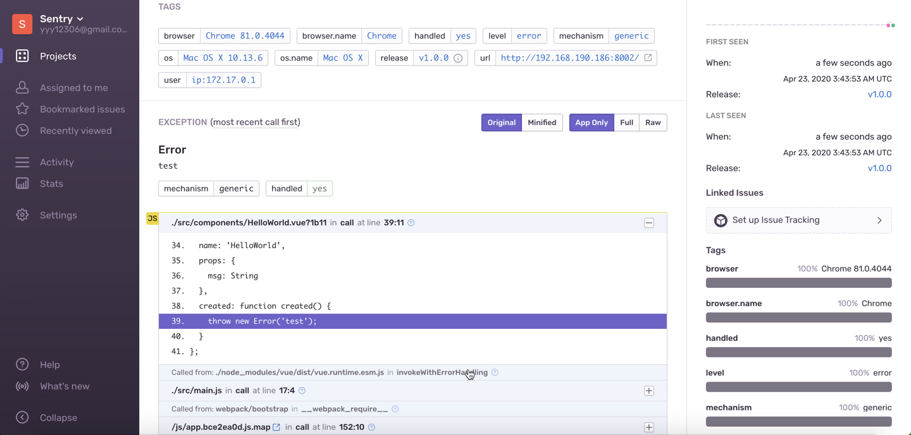
可以看到我们本地部署的 Sentry 服务，也能帮我们收集异常了。完美 ~~